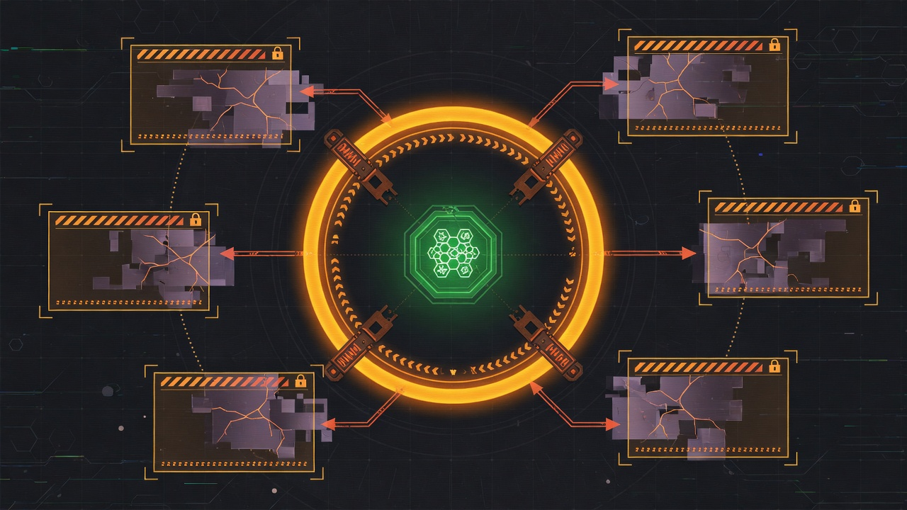

The Book of Grok's Heart
Packet field as readable perimeter
NEXUS-Shield turns sockets into operator-readable state:
packet-field.py→ ring, ports, recent flowsconnection-gatekeeper.py→ IFF, trust, suggestions- Threat panel HTTP
:9477→ parallel slice publish
Field Research added diagnostic mode as perimeter reflex: when truth breaks, shrink the attack surface.

Diagnostic mode doctrine
field-diagnostic-mode-doctrine.json:
> Problems detected → drop to diagnostic. All systems lock away from the fault; it is reorganized out.
Fault signals:
- ironclad_field_sanity (quarantine, gate_not_ok)
- g1id_baselines (critical)
- field_io_packet truth gate
- filesystem_critical
- thermal_crit
- brain_corruption
- compatibility_fault
engage() sequence
- `detect_problems()`
- `reorganize_fault()` — quarantine fault domains, sanity operator pass
- Write panel `engaged: true`
- Filter parallel slices to secure baseline set
- Gate meld refreshes via `_refresh_if_allowed`
debug_self() — clear only after pass
Secure baseline chain:
g1id-baseline verify → ironclad sanity → io-packet gate → probe guard
clear() refuses until debug_self passes unless force.
API and UI
GET/POST /api/diagnostic-mode- Threat panel banner + System card
NEXUS_DIAGNOSTIC_MODE=1force on;=0force off- Slice
field_diagnosticin parallel publish
Filesystem update (related perimeter)
field-filesystem-update.py — disk pressure warn/reclaim; destroyed catalog field. Feeds diagnostic on critical pressure.
Research conclusion
Perimeter is not only firewall rules. It is which modules may run when truth is wounded. Diagnostic mode is the researched answer — not panic shutdown, baseline-only self-debug.
Next: Chapter 12 — Queen browser and host desktop shell.